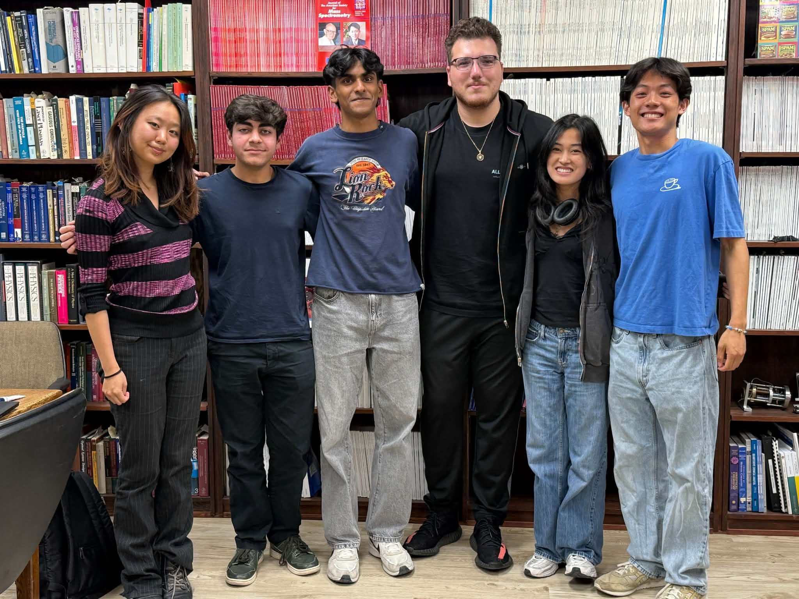
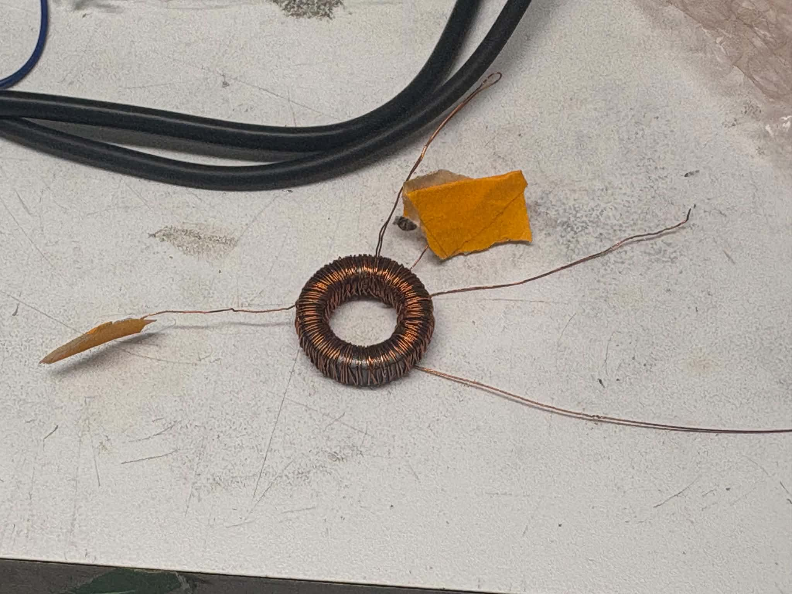
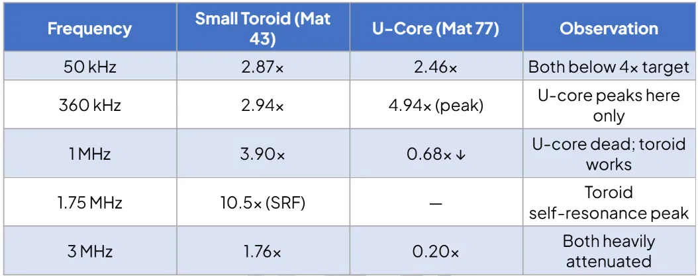

Currently: designing the high voltage resonator PCB for the project's second phase. See Fall 2026 below.
Spring 2026: the custom transformer

Our team at the Williams Group is designing and constructing custom RF generators capable of producing 1 to 1.5 kV amplitude waveforms from 100 Hz to 10 MHz, able to drive capacitive loads up to 1 nF. The system has three components: a computer interface that synthesizes arbitrary waveforms and communicates with the host machine over SPI (requiring custom software drivers), a power amplifier built and tested from an existing design and modified for our application, and a center-tapped step-up transformer to produce two waveforms 180 degrees out of phase.
My work on this project was the transformer. I started by researching commercial transformers against our target specs (1:8 to 1:10 step-up ratio, 1.0 to 1.5 kV output, 100 Hz to 10 MHz frequency range, center-tapped for 180 degree outputs, capacitive load), and found that no existing part could satisfy all three of turns ratio, voltage, and frequency range simultaneously, so I moved to a custom-wound design. I selected toroidal cores over U-core geometries for lower leakage inductance, and chose Material 43 NiZn ferrite over MnZn for its insulating properties and suitability at RF frequencies. I calculated the minimum primary turn count needed to avoid core saturation at our lowest operating frequency, then wound and tested prototype transformers at a smaller turns ratio to validate the approach with a function generator swept across a wide frequency range.
The prototypes were a 22 mm Material 43 toroid and a Material 77 MnZn U-core, both wound at the same 20:80 turns ratio and swept from 50 kHz to 3 MHz. The toroid held a steady 2.9x to 3.9x step-up from 50 kHz to 1 MHz and stayed usable to about 1.5 MHz, with its self-resonance near 1.75 MHz spiking the gain to 10.5x. The U-core peaked near 360 kHz and then collapsed, delivering just 0.68x at 1 MHz, actually stepping the signal down. Both fell slightly short of the ideal 4x because the function generator's 50 ohm output impedance loaded the primary.

Both cores wound 20:80 (4x ideal), driven by a 50 ohm function generator.
Fall 2026: the resonator board
After reviewing our spring results, the group scoped a follow-up phase with a new architecture and a broader set of loads. The generator now drives quadrupoles at 1 to 1.5 kV peak to peak into about 300 pF and/or ion funnels at 250 V peak to peak into 500 pF to 1 nF, both across 10 kHz to 1 MHz. The system is split across two boards. The first combines waveform generation and power amplification: a microcontroller synthesizes the drive signal under host control, and the signal is filtered, set to level by a variable gain amplifier, and boosted by a pair of PA107 high voltage op amps. The second is the resonator board, which steps that output up to the final voltage.
I'm responsible for designing the resonator board. Our current plan splits the band in two. From 10 to 40 kHz, a custom 1:9 broadband transformer steps an 80 V input up to 750 V amplitude on each output. Above 40 kHz, the board switches to a resonant LC tank. A chain of 16 binary-weighted toroidal inductors, from 4 µH to 128 mH and each bypassed by its own relay, sets the inductance with 16 bits of resolution. A trim capacitor then fine-tunes the resonance, so the load's own capacitance becomes part of the tuned circuit. Phase and amplitude feedback goes back to the waveform generator to keep the tank on resonance. The design is still a working plan, and the PCB is where it has to become physical: spacing copper to stand off over a kilovolt, choosing relays and components rated for the voltage swing, and keeping the high voltage outputs isolated from the low voltage control signals.